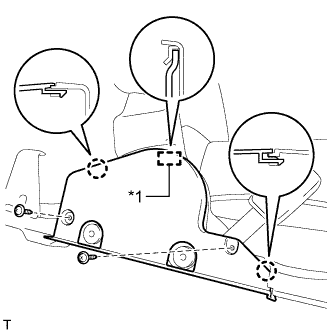
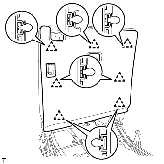
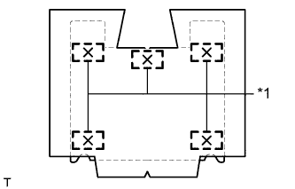

ЗАДНЕЕ СИДЕНЬЕ №2 В СБОРЕ (для сиденья с ручным приводом, с левой стороны) > РАЗБОРКА |
| 1. СНИМИТЕ ПОДГОЛОВНИК ЗАДНЕГО СИДЕНЬЯ В СБОРЕ |
Снимите подголовник.
| 2. СНИМИТЕ КОЛПАЧОК |
Снимите 2 колпачка.
| 3. СНИМИТЕ НИЖНЮЮ НАКЛАДКУ ПЕТЛИ ПОДУШКИ ЛЕВОГО ЗАДНЕГО СИДЕНЬЯ |
Выверните 2 винта.
Отцепите 3 захвата и снимите крышку.
| 4. СНИМИТЕ НИЖНЮЮ НАКЛАДКУ ПЕТЛИ ПОДУШКИ ПРАВОГО ЗАДНЕГО СИДЕНЬЯ |
|  |
Выверните 2 винта.
| *1 | Направляющее |
Освободите 2 захвата и направляющую и снимите обивку.
| 5. СНИМИТЕ ЗАМОК РЕМНЯ БЕЗОПАСНОСТИ ЛЕВОГО ЗАДНЕГО СИДЕНЬЯ № 2 В СБОРЕ |
 |
Выверните болт с помощью торцевого ключа "TORX" T45 и снимите замок ремня безопасности в сборе.
| 6. СНИМИТЕ МОЛДИНГ ПОДУШКИ ЗАДНЕГО СИДЕНЬЯ № 1 |
 |
С помощью съемника фиксаторов освободите 2 фиксатора.
Освободите 2 захвата и 4 направляющих, а затем снимите молдинг.
| *1 | Направляющее |
| 7. СНИМИТЕ ОБИВКУ ПОДУШКИ СИДЕНЬЯ ВМЕСТЕ С ПОДУШКОЙ |
Откройте 2 застежки.
| *1 | Фиксатор |
 |
С помощью инструмента для снятия фиксаторов снимите 2 фиксатора и откройте внутреннюю часть обивки подушки сиденья.
Освободите 2 крепления и снимите обивку подушки сиденья вместе с подушкой.
| *1 | Крюк |
| 8. СНИМИТЕ ОБИВКУ ПОДУШКИ ЛЕВОГО СИДЕНЬЯ № 3 В СБОРЕ |
 |
Освободите крепление.
| *1 | Фиксатор |
Снимите витковые пружины и обивку подушки сиденья.
| 9. СНИМИТЕ ВНУТРЕННЕЕ КРАЕВОЕ УКРЕПЛЕНИЕ ПОДУШКИ ЛЕВОГО ЗАДНЕГО СИДЕНЬЯ |
 |
Срежьте закрепки и снимите краевое укрепление с подушки сиденья.
| *1 | Стяжка |
| 10. СНИМИТЕ МОЛДИНГ ПОДУШКИ ЗАДНЕГО СИДЕНЬЯ № 2 |
Выверните 2 винта.
Освободите 2 захвата и снимите молдинг.
| 11. СНИМИТЕ КАРКАС ПОДУШКИ ЛЕВОГО СИДЕНЬЯ № 2 В СБОРЕ |
Приведите в действие рычаг замка заднего сиденья № 2 и отведите каркас подушки сиденья.
 |
С помощью торцевого ключа "TORX" T40 выверните 4 болта "TORX" и снимите каркас подушки сиденья.
| 12. СНИМИТЕ ЛЕВУЮ ТЯГУ СИДЕНЬЯ № 3 В СБОРЕ |
Снимите 3 фиксатора.
Освободите 2 захвата и 4 направляющих и снимите тягу сиденья № 3.
| *1 | Направляющее |
| 13. СНИМИТЕ РЫЧАГ ЗАМКА ЛЕВОГО ЗАДНЕГО СИДЕНЬЯ № 2 В СБОРЕ |
Снимите зажим.
| *1 | Наконечник троса |
| *2 | Хомут |
Скрутите конец троса в направлении, показанном стрелкой, и отсоедините трос.
Выверните винт.
| *1 | Направляющее |
Освободите 2 направляющие и снимите рычаг.
| 14. СНИМИТЕ НАКЛАДКУ НОЖКИ ЛЕВОГО ЗАДНЕГО СИДЕНЬЯ |
Снимите фиксатор.
| *1 | Крюк |
Освободите 3 крепления и 5 фиксаторов, а затем снимите накладку.
| 15. СНИМИТЕ НАКЛАДКУ НОЖЕК ЛЕВОГО ЗАДНЕГО СИДЕНЬЯ № 3 |
 |
Отцепите 2 захвата и снимите обивку.
| 16. СНИМИТЕ ВНУТРЕННЮЮ НАКЛАДКУ ПЕТЛИ ПОДУШКИ ЛЕВОГО ЗАДНЕГО СИДЕНЬЯ |
Выверните винт и снимите фиксатор.
Отсоедините направляющую и снимите щиток.
| *1 | Направляющее |
| 17. СНИМИТЕ ВНУТРЕННЮЮ НАКЛАДКУ ПЕТЛИ ПОДУШКИ ПРАВОГО ЗАДНЕГО СИДЕНЬЯ |
Выверните винт и снимите фиксатор.
Отсоедините направляющую и снимите щиток.
| *1 | Направляющее |
| 18. СНИМИТЕ ТРОС ФИКСАЦИИ ЛЕВОГО ЗАДНЕГО СИДЕНЬЯ |
Снимите зажим.
Скрутите конец троса в направлении, показанном стрелкой, и снимите трос.
| *1 | Хомут |
| *2 | Наконечник троса |
| 19. СНИМИТЕ КРЫШКУ ЗАЩЕЛКИ ЗАМКА СПИНКИ ЗАДНЕГО СИДЕНЬЯ № 1 |
С помощью отвертки расцепите захват и направляющую и снимите крышку.
| *1 | Направляющая |
| *2 | Защитная клейкая лента |
| 20. СНИМИТЕ РЫЧАГ ЗАМКА ЛЕВОГО ЗАДНЕГО СИДЕНЬЯ В СБОРЕ |
Выверните 2 винта.
Освободите направляющую и снимите рычаг.
Снимите зажим.
Скрутите конец троса в направлении, показанном стрелкой, и отсоедините трос.
| *1 | Хомут |
| *2 | Наконечник троса |
| *3 | Направляющая |
| 21. СНИМИТЕ КАНАТНЫЙ КРЮК В СБОРЕ |
С помощью отвертки освободите 2 захвата и откройте крышку.
| *1 | Защитная клейкая лента |
Выверните болт и снимите канатный крюк.
| 22. СНИМИТЕ КРЫШКУ ЗАЩЕЛКИ ЗАМКА СПИНКИ ЗАДНЕГО СИДЕНЬЯ № 2 |
С помощью отвертки расцепите захват и направляющую и снимите крышку.
| *1 | Направляющая |
| *2 | Защитная клейкая лента |
| 23. СНИМИТЕ РЫЧАГ РАЗБЛОКИРОВКИ ЗАДНЕГО СИДЕНЬЯ В СБОРЕ |
Выверните 2 винта.
Освободите крепление и снимите рычаг.
| *1 | Крюк |
Освободите 2 зажима.
Скрутите концы 2 тросов в направлении, показанном стрелкой, и отсоедините 2 троса.
| *1 | Наконечник троса |
| *2 | Хомут |
| 24. СНИМИТЕ ПАНЕЛЬ СПИНКИ ЛЕВОГО ЗАДНЕГО СИДЕНЬЯ В СБОРЕ |
|  |
Освободите 7 фиксаторов и снимите панель.
| 25. СНИМИТЕ ДЕРЖАТЕЛЬ ПОДГОЛОВНИКА ЗАДНЕГО СИДЕНЬЯ № 2 В СБОРЕ |
Освободите 4 захвата и снимите 2 держателя подголовника.
| 26. СНИМИТЕ ОБИВКУ СПИНКИ СИДЕНЬЯ ВМЕСТЕ С ПОДУШКОЙ |
Освободите крепления и снимите обивку спинки сиденья с подушкой.
| *1 | Крюк |
| 27. СНИМИТЕ ОБИВКУ СПИНКИ ЛЕВОГО ЗАДНЕГО СИДЕНЬЯ № 3 В СБОРЕ |
Снимите витковые пружины и обивку спинки сиденья.
| 28. СНИМИТЕ КРАЕВОЕ УКРЕПЛЕНИЕ СПИНКИ ЗАДНЕГО СИДЕНЬЯ № 2 |
|  |
Срежьте закрепки и снимите краевое укрепление с подушки спинки сиденья.
| *1 | Стяжка |
| 29. СНИМИТЕ ОБИВКУ СПИНКИ СИДЕНЬЯ № 2 |
Отцепите 2 захвата и снимите обивку.
| 30. СНИМИТЕ ВНУТРЕННЮЮ ОТКИДНУЮ КРЫШКУ ЛЕВОГО ЗАДНЕГО СИДЕНЬЯ № 3 |
Отцепите 4 захвата и снимите обивку.
| 31. СНИМИТЕ НАРУЖНУЮ ОТКИДНУЮ КРЫШКУ ЛЕВОГО ЗАДНЕГО СИДЕНЬЯ № 3 |
Выверните винт.
Освободите направляющую и 2 захвата и снимите крышку.
| *1 | Направляющее |
| 32. СНИМИТЕ ВНУТРЕННЮЮ ОТКИДНУЮ КРЫШКУ ЛЕВОГО ЗАДНЕГО СИДЕНЬЯ № 2 |
 |
Отцепите 5 захватов и снимите обивку.
| 33. СНИМИТЕ НАРУЖНУЮ ОТКИДНУЮ КРЫШКУ ЛЕВОГО ЗАДНЕГО СИДЕНЬЯ № 2 |
Выверните винт.
Освободите направляющую и 2 захвата и снимите крышку.
| *1 | Направляющее |
| 34. СНИМИТЕ ТРОС ФИКСАЦИИ СКЛАДЫВАЮЩЕГОСЯ СИДЕНЬЯ В СБОРЕ |
 |
Снимите захват, обозначенный буквой B, и отсоедините 2 захвата, обозначенный буквой A.
Обрежьте 2 бандажа жгута проводов.
Скрутите конец троса в направлении, показанном стрелкой, и снимите трос.
| *1 | Зажим A |
| *2 | Зажим B |
| *3 | Бандаж жгута |
| *4 | Наконечник троса |
| 35. СНИМИТЕ ТРОС ФИКСАЦИИ СИДЕНЬЯ № 2 |
Снимите зажим.
Скрутите конец троса в направлении, показанном стрелкой, и снимите трос.
| *1 | Хомут |
| *2 | Наконечник троса |
| 36. СНИМИТЕ КАРКАС СПИНКИ ЛЕВОГО СИДЕНЬЯ № 3 В СБОРЕ |
С помощью торцевого ключа "TORX" T45 выверните 4 болта "TORX" и снимите каркас.
| 37. СНИМИТЕ НОЖКУ ЛЕВОГО СИДЕНЬЯ № 3 В СБОРЕ |
Снимите 4 фиксатора и отсоедините нижний коврик подушки левого сиденья от ножки сиденья № 3.
| 38. СНИМИТЕ НОЖКУ СИДЕНЬЯ № 2 В СБОРЕ (с правой стороны) |
Снимите 4 фиксатора и отсоедините нижний коврик подушки правого сиденья от ножки сиденья № 2.